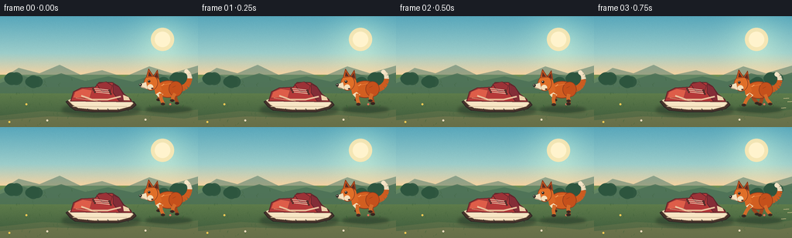
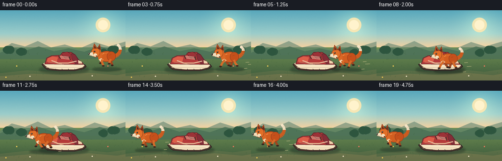

CODING AGENTS AS PIXEL WORLD MODELS
traex/DeepSeek-V4.1-Flash · dynamic_spatial_relationship_0029
点击播放 · 原生 RGB 像素
逐轮保存的候选
回放视频、检查图与代码变化。
每份候选均可单独播放。实际图片检查记录在下方工具轨迹中。
候选 01播放与检查图
点击播放 · 原生 RGB 像素


展开代码变化
--- 上一保存版本
+++ 本次保存版本
@@ -0,0 +1,415 @@
+from __future__ import annotations
+
+import math
+from pathlib import Path
+
+import numpy as np
+from PIL import Image, ImageDraw, ImageFilter
+
+import artifact_io
+
+
+CASE_DIR = Path(__file__).resolve().parent
+WIDTH = 256
+HEIGHT = 144
+FRAMES = 20
+FPS = 4
+SS = 4
+
+
+def s(value: float) -> int:
+ return int(round(value * SS))
+
+
+def scaled_box(box: tuple[float, float, float, float]) -> tuple[int, int, int, int]:
+ return tuple(s(value) for value in box)
+
+
+def scaled_points(points: list[tuple[float, float]]) -> list[tuple[int, int]]:
+ return [(s(x), s(y)) for x, y in points]
+
+
+def polygon(
+ draw: ImageDraw.ImageDraw,
+ points: list[tuple[float, float]],
+ fill: tuple[int, ...] | str,
+ outline: tuple[int, ...] | str | None = None,
+ width: float = 1.0,
+) -> None:
+ pts = scaled_points(points)
+ draw.polygon(pts, fill=fill)
+ if outline is not None:
+ draw.line(pts + [pts[0]], fill=outline, width=s(width), joint="curve")
+
+
+def ellipse(
+ draw: ImageDraw.ImageDraw,
+ box: tuple[float, float, float, float],
+ fill: tuple[int, ...] | str,
+ outline: tuple[int, ...] | str | None = None,
+ width: float = 1.0,
+) -> None:
+ draw.ellipse(scaled_box(box), fill=fill, outline=outline, width=s(width))
+
+
+def line(
+ draw: ImageDraw.ImageDraw,
+ points: list[tuple[float, float]],
+ fill: tuple[int, ...] | str,
+ width: float,
+) -> None:
+ draw.line(
+ scaled_points(points),
+ fill=fill,
+ width=s(width),
+ joint="curve",
+ )
+
+
+def cubic_points(
+ p0: tuple[float, float],
+ p1: tuple[float, float],
+ p2: tuple[float, float],
+ p3: tuple[float, float],
+ count: int = 18,
+) -> list[tuple[float, float]]:
+ points = []
+ for index in range(count):
+ t = index / (count - 1)
+ u = 1.0 - t
+ x = u**3 * p0[0] + 3 * u**2 * t * p1[0] + 3 * u * t**2 * p2[0] + t**3 * p3[0]
+ y = u**3 * p0[1] + 3 * u**2 * t * p1[1] + 3 * u * t**2 * p2[1] + t**3 * p3[1]
+ points.append((x, y))
+ return points
+
+
+def build_background() -> Image.Image:
+ width, height = WIDTH * SS, HEIGHT * SS
+ yy, xx = np.mgrid[0:height, 0:width]
+
+ sky_top = np.array([88, 167, 187], dtype=np.float32)
+ sky_mid = np.array([156, 205, 202], dtype=np.float32)
+ sky_warm = np.array([247, 210, 159], dtype=np.float32)
+ ground_top = np.array([114, 145, 83], dtype=np.float32)
+ ground_bottom = np.array([57, 86, 59], dtype=np.float32)
+
+ sky_t = np.clip(yy / s(77), 0.0, 1.0)[..., None]
+ first_half = np.clip(sky_t / 0.62, 0.0, 1.0)
+ second_half = np.clip((sky_t - 0.62) / 0.38, 0.0, 1.0)
+ sky = sky_top * (1.0 - first_half) + sky_mid * first_half
+ sky = sky * (1.0 - second_half) + sky_warm * second_half
+
+ sun_distance = np.sqrt((xx - s(210)) ** 2 + (yy - s(30)) ** 2)
+ glow = np.clip(1.0 - sun_distance / s(70), 0.0, 1.0) ** 2
+ sky += glow[..., None] * np.array([44, 35, 15], dtype=np.float32)
+
+ ground_t = np.clip((yy - s(76)) / s(68), 0.0, 1.0)[..., None]
+ ground = ground_top * (1.0 - ground_t) + ground_bottom * ground_t
+
+ mask = (yy >= s(76))[..., None]
+ pixels = np.where(mask, ground, sky)
+
+ rng = np.random.default_rng(20261110)
+ grain = rng.normal(0.0, 2.4, size=(height, width, 1))
+ pixels = np.clip(pixels + grain, 0, 255).astype(np.uint8)
+ image = Image.fromarray(pixels, "RGB")
+ draw = ImageDraw.Draw(image, "RGBA")
+
+ ellipse(draw, (195.0, 15.0, 225.0, 45.0), (255, 232, 177, 225))
+ ellipse(draw, (200.0, 20.0, 220.0, 40.0), (255, 243, 205, 255))
+
+ polygon(
+ draw,
+ [(0, 82), (24, 67), (51, 74), (77, 63), (104, 76), (132, 70), (160, 79), (193, 65), (222, 74), (256, 64), (256, 92), (0, 92)],
+ (92, 129, 111, 150),
+ )
+ polygon(
+ draw,
+ [(0, 87), (26, 76), (50, 83), (79, 74), (110, 84), (140, 78), (172, 85), (203, 74), (231, 81), (256, 73), (256, 100), (0, 100)],
+ (75, 112, 86, 210),
+ )
+
+ # Distant shrub clusters frame the action without competing with the objects.
+ shrub_color = (45, 85, 62, 235)
+ for cx, cy, count, spread in [
+ (17, 81, 7, 12),
+ (43, 85, 5, 10),
+ (231, 81, 8, 13),
+ (210, 87, 4, 8),
+ ]:
+ for index in range(count):
+ offset = (index - (count - 1) / 2) * (spread / max(1, count - 1))
+ radius = 5.5 + (index % 3) * 1.4
+ ellipse(
+ draw,
+ (cx + offset - radius, cy - radius, cx + offset + radius, cy + radius),
+ shrub_color,
+ )
+
+ # Soft path of lighter earth leads beneath the shoe.
+ polygon(
+ draw,
+ [(0, 129), (55, 123), (110, 126), (165, 121), (220, 126), (256, 121), (256, 144), (0, 144)],
+ (124, 126, 82, 80),
+ )
+ polygon(
+ draw,
+ [(0, 135), (63, 130), (125, 132), (181, 128), (238, 133), (256, 130), (256, 144), (0, 144)],
+ (143, 131, 84, 95),
+ )
+
+ rng = np.random.default_rng(94)
+ for _ in range(95):
+ x = float(rng.uniform(0, WIDTH))
+ y = float(rng.uniform(82, 143))
+ if 80 < x < 177 and 88 < y < 130:
+ continue
+ length = float(rng.uniform(1.3, 3.4))
+ lean = float(rng.uniform(-1.6, 1.6))
+ color = (58, 95, 54, int(rng.integers(95, 175)))
+ line(draw, [(x, y), (x + lean, y - length)], color, 0.55)
+
+ for x, y, color in [
+ (34, 116, (242, 201, 84)),
+ (61, 137, (236, 220, 190)),
+ (188, 136, (236, 220, 190)),
+ (220, 116, (236, 120, 93)),
+ (12, 139, (242, 201, 84)),
+ ]:
+ line(draw, [(x, y + 2), (x, y - 2)], (64, 104, 52, 210), 0.55)
+ ellipse(draw, (x - 1.3, y - 3.0, x + 1.3, y - 0.5), color)
+
+ return image
+
+
+def draw_shoe(image: Image.Image) -> None:
+ shadow = Image.new("RGBA", image.size, (0, 0, 0, 0))
+ shadow_draw = ImageDraw.Draw(shadow, "RGBA")
+ ellipse(shadow_draw, (80, 113, 181, 130), (29, 42, 35, 105))
+ shadow = shadow.filter(ImageFilter.GaussianBlur(s(2.2)))
+ image.alpha_composite(shadow)
+
+ draw = ImageDraw.Draw(image, "RGBA")
+
+ # Sole, including a dark outsole and small tread marks.
+ polygon(
+ draw,
+ [(85, 111), (90, 117), (97, 122), (118, 124), (153, 124), (170, 120), (176, 115), (173, 111), (91, 108)],
+ (72, 52, 43),
+ (45, 37, 37),
+ 1.1,
+ )
+ polygon(
+ draw,
+ [(88, 109), (94, 115), (101, 119), (121, 121), (153, 121), (168, 117), (172, 113), (169, 110), (93, 107)],
+ (247, 229, 196),
+ (213, 185, 151),
+ 0.8,
+ )
+ line(draw, [(94, 117), (164, 117)], (218, 196, 163, 210), 1.0)
+ for x in (100, 113, 126, 139, 152, 164):
+ line(draw, [(x, 120), (x + 2, 123)], (54, 48, 44, 190), 0.75)
+
+ # Main crimson upper.
+ polygon(
+ draw,
+ [(92, 108), (95, 98), (105, 93), (123, 92), (128, 86), (145, 86), (153, 91), (160, 101), (169, 108), (170, 111), (91, 110)],
+ (181, 57, 57),
+ (99, 39, 43),
+ 1.3,
+ )
+ polygon(
+ draw,
+ [(94, 106), (97, 98), (107, 94), (119, 96), (116, 106)],
+ (222, 93, 73),
+ (151, 58, 53),
+ 0.8,
+ )
+ polygon(
+ draw,
+ [(146, 88), (154, 92), (161, 104), (169, 109), (154, 110), (146, 99)],
+ (132, 45, 55),
+ (88, 35, 42),
+ 0.8,
+ )
+ polygon(
+ draw,
+ [(125, 88), (137, 85), (145, 90), (143, 98), (133, 98), (128, 93)],
+ (156, 50, 55),
+ (94, 37, 41),
+ 0.8,
+ )
+
+ # Side stripe and heel detail.
+ line(draw, [(105, 103), (119, 108), (139, 108), (156, 104)], (245, 220, 184), 2.0)
+ line(draw, [(105, 103), (119, 108), (139, 108), (156, 104)], (222, 157, 116, 170), 0.65)
+ polygon(draw, [(159, 102), (166, 105), (168, 109), (160, 109)], (239, 210, 170))
+
+ # Laces and eyelets.
+ for index in range(3):
+ y = 93.5 + index * 2.3
+ line(draw, [(121 + index * 1.0, y), (140 + index * 0.8, y + 2.2)], (245, 226, 194), 1.0)
+ ellipse(draw, (119 + index * 1.2, y - 0.6, 121.4 + index * 1.2, y + 1.7), (81, 47, 43))
+ ellipse(draw, (140 + index * 1.0, y + 1.6, 142.4 + index * 1.0, y + 3.9), (81, 47, 43))
+ line(draw, [(98, 106), (111, 108), (126, 110)], (246, 198, 145, 105), 0.85)
+
+
+def draw_leg(
+ draw: ImageDraw.ImageDraw,
+ anchor: tuple[float, float],
+ stride: float,
+ lift: float,
+ color: str,
+ paw: str,
+) -> None:
+ ax, ay = anchor
+ foot = (ax + stride, ay + 13.5 - lift)
+ knee = (ax + stride * 0.52 - 1.2, ay + 7.0 - lift * 0.42)
+ line(draw, [anchor, knee, foot], color, 4.5)
+ ellipse(draw, (foot[0] - 3.3, foot[1] - 1.5, foot[0] + 2.3, foot[1] + 1.8), paw)
+ line(draw, [(foot[0] - 1.5, foot[1] + 0.6), (foot[0] + 1.0, foot[1] + 0.8)], (31, 25, 24), 0.55)
+
+
+def draw_fox(draw: ImageDraw.ImageDraw, x: float, baseline: float, phase: float) -> None:
+ bob = 1.1 * math.sin(phase * 2.0)
+ y = baseline + bob
+
+ # Tail is behind the body and carries the strongest silhouette curve.
+ tail = cubic_points(
+ (x + 12.5, y - 24.0),
+ (x + 28.0, y - 23.0),
+ (x + 34.0, y - 40.0),
+ (x + 25.0, y - 46.0 + 1.8 * math.sin(phase)),
+ 22,
+ )
+ for index in range(len(tail) - 1):
+ progress = index / (len(tail) - 2)
+ color = (205, 91, 31) if progress < 0.70 else (239, 220, 189)
+ width = 9.2 - progress * 4.2
+ line(draw, [tail[index], tail[index + 1]], color, width)
+ ellipse(draw, (tail[-1][0] - 2.8, tail[-1][1] - 2.8, tail[-1][0] + 2.8, tail[-1][1] + 2.8), (245, 228, 198))
+
+ swing = math.sin(phase)
+ opposite = math.sin(phase + math.pi)
+ lift_a = 4.8 * max(0.0, math.cos(phase))
+ lift_b = 4.8 * max(0.0, math.cos(phase + math.pi))
+
+ draw_leg(draw, (x - 7.5, y - 19.0), 8.0 * swing, lift_a, "#9e461e", "#36261f")
+ draw_leg(draw, (x + 10.5, y - 19.0), 7.0 * opposite, lift_b, "#9e461e", "#36261f")
+
+ # Body and haunch.
+ ellipse(draw, (x - 15.0, y - 35.0, x + 18.0, y - 12.5), (210, 94, 32), (139, 58, 29), 0.9)
+ ellipse(draw, (x + 2.0, y - 34.0, x + 20.0, y - 14.0), (197, 80, 27), (139, 58, 29), 0.7)
+ polygon(
+ draw,
+ [(x - 12.5, y - 22.0), (x - 5.0, y - 17.0), (x - 10.5, y - 12.7), (x - 15.0, y - 17.5)],
+ (245, 222, 184),
+ )
+ line(draw, [(x - 12, y - 28), (x + 5, y - 31)], (238, 131, 66, 130), 0.8)
+
+ # Neck and head, facing left.
+ polygon(
+ draw,
+ [(x - 19.0, y - 36.0), (x - 11.0, y - 38.0), (x - 7.0, y - 22.0), (x - 15.0, y - 17.0)],
+ (218, 103, 37),
+ )
+ ellipse(draw, (x - 30.0, y - 42.0, x - 12.0, y - 22.0), (224, 111, 40), (140, 61, 29), 0.8)
+
+ # Ears, with warm inner ear color.
+ polygon(draw, [(x - 27, y - 39), (x - 24, y - 50), (x - 17.5, y - 40)], (210, 91, 31), (132, 55, 27), 0.7)
+ polygon(draw, [(x - 24.5, y - 40.5), (x - 23.6, y - 46.5), (x - 19.5, y - 40.3)], (93, 45, 34))
+ polygon(draw, [(x - 17.5, y - 40.5), (x - 12.5, y - 48.5), (x - 10.5, y - 36.5)], (202, 83, 28), (132, 55, 27), 0.7)
+ polygon(draw, [(x - 16.5, y - 40.0), (x - 13.0, y - 45.2), (x - 11.6, y - 38.0)], (93, 45, 34))
+
+ # Muzzle, nose, eye, and cheek.
+ polygon(
+ draw,
+ [(x - 27.0, y - 33.0), (x - 35.2, y - 29.7), (x - 33.7, y - 26.0), (x - 25.0, y - 23.8)],
+ (245, 224, 190),
+ (177, 142, 110),
+ 0.5,
+ )
+ ellipse(draw, (x - 36.3, y - 31.0, x - 32.8, y - 27.7), (42, 34, 31))
+ ellipse(draw, (x - 35.4, y - 30.4, x - 34.4, y - 29.3), (231, 222, 207))
+ ellipse(draw, (x - 25.0, y - 35.5, x - 21.7, y - 32.2), (48, 37, 31))
+ ellipse(draw, (x - 24.1, y - 35.0, x - 23.2, y - 34.1), (255, 245, 222))
+ line(draw, [(x - 34.3, y - 27.3), (x - 28.0, y - 25.0)], (106, 62, 46), 0.55)
+ ellipse(draw, (x - 25.5, y - 30.0, x - 18.0, y - 23.0), (245, 223, 187))
+ ellipse(draw, (x - 20.8, y - 25.4, x - 17.8, y - 23.7), (82, 54, 45, 150))
+
+ # Near legs.
+ draw_leg(draw, (x - 8.5, y - 18.0), 8.8 * opposite, lift_b, "#d56b29", "#3d2a22")
+ draw_leg(draw, (x + 10.0, y - 18.0), 7.6 * swing, lift_a, "#d56b29", "#3d2a22")
+
+ # A few short fur accents keep the silhouette lively at small size.
+ line(draw, [(x - 7.0, y - 28.0), (x - 4.0, y - 30.5)], (248, 167, 94, 150), 0.65)
+ line(draw, [(x + 7.0, y - 26.0), (x + 11.0, y - 28.0)], (130, 52, 25, 140), 0.55)
+
+
+def fox_position(frame: int) -> tuple[float, float, float]:
+ if frame <= 2:
+ x = 216.0 - frame * 1.4
+ phase = -0.4 + frame * 0.22
+ elif frame <= 16:
+ t = (frame - 2) / 14.0
+ eased = 0.5 - 0.5 * math.cos(math.pi * t)
+ x = 213.2 - 174.7 * eased
+ phase = (frame - 2) * 1.28
+ else:
+ x = 38.5 - (frame - 16) * 1.1
+ phase = 17.9 + (frame - 16) * 0.18
+ baseline = 119.0
+ if 4 <= frame <= 15:
+ baseline += 4.0 * math.sin(math.pi * (frame - 4) / 11.0)
+ return x, baseline, phase
+
+
+def draw_motion_marks(draw: ImageDraw.ImageDraw, x: float, baseline: float, frame: int) -> None:
+ if frame < 3 or frame > 16:
+ return
+ for index, (dx, dy, length, alpha) in enumerate(
+ [(34, -14, 7, 80), (39, -8, 9, 60), (31, 2, 6, 48)]
+ ):
+ offset = math.sin(frame * 0.7 + index) * 2.0
+ line(
+ draw,
+ [(x + dx, baseline + dy + offset), (x + dx + length, baseline + dy + offset - 0.5)],
+ (249, 222, 165, alpha),
+ 0.65,
+ )
+
+
+def make_frames() -> np.ndarray:
+ background = build_background().convert("RGBA")
+ shoe_layer = background.copy()
+ draw_shoe(shoe_layer)
+ shoe_layer = shoe_layer.convert("RGB")
+ frames = []
+
+ for frame in range(FRAMES):
+ image = shoe_layer.convert("RGBA")
+ x, baseline, phase = fox_position(frame)
+
+ fox_shadow = Image.new("RGBA", image.size, (0, 0, 0, 0))
+ shadow_draw = ImageDraw.Draw(fox_shadow, "RGBA")
+ ellipse(shadow_draw, (x - 28, baseline - 2, x + 32, baseline + 6), (28, 40, 33, 105))
+ fox_shadow = fox_shadow.filter(ImageFilter.GaussianBlur(s(1.8)))
+ image.alpha_composite(fox_shadow)
+
+ draw = ImageDraw.Draw(image, "RGBA")
+ draw_motion_marks(draw, x, baseline, frame)
+ draw_fox(draw, x, baseline, phase)
+
+ # Foreground blades overlap the paws only at the edges of the shot.
+ if x < 60 or x > 196:
+ for gx, gy, lean in [(x - 21, baseline + 1, -2), (x + 19, baseline + 1, 2)]:
+ line(draw, [(gx, gy), (gx + lean, gy - 5)], (55, 94, 51, 205), 0.7)
+
+ frame_rgb = image.convert("RGB").resize((WIDTH, HEIGHT), Image.Resampling.LANCZOS)
+ frames.append(np.asarray(frame_rgb, dtype=np.uint8))
+
+ return np.stack(frames, axis=0)
+
+
+if __name__ == "__main__":
+ artifact_io.save(make_frames(), CASE_DIR)
可观测工具轨迹
实际执行的命令与返回图片。
命令 1exit 0
/bin/bash -c "pwd && rg --files -g 'prompt.txt' -g 'GENERATION_RULES.md' -g 'task_spec.json' -g '"'!node_modules'"' -g '"'!vendor'"'"
命令 2exit 0
/bin/bash -c "find . -maxdepth 2 -type f -printf '%p\\n' | sort | head -200"
命令 3exit 0
/bin/bash -c 'git status --short'
命令 4exit 0
/bin/bash -c 'cat prompt.txt'
命令 5exit 0
/bin/bash -c 'cat GENERATION_RULES.md'
命令 6exit 0
/bin/bash -c 'cat task_spec.json'
命令 7exit 0
/bin/bash -c "sed -n '1,240p' artifact_io.py"
命令 8exit 0
/bin/bash -c 'python generate.py'
命令 9exit 0
/bin/bash -c "python - <<'PY'
import json
import numpy as np
from PIL import Image
from pathlib import Path
p=Path('.')
spec=json.loads((p/'task_spec.json').read_text())
z=np.load(p/'pixels.npz')['pixels']
print('spec', spec)
print('pixels', z.shape, z.dtype, int(z.min()), int(z.max()))
print('frames', len(list((p/'frames').glob('*.png'))))
print('outputs', sorted(x.name for x in p.iterdir() if x.is_file()))
for i in [0, 2, 8, 16, 19]:
im=Image.open(p/'frames'/f'{i:02d}.png')
print(i, im.size, im.mode, len(set(im.getdata())))
PY"命令 10exit 0
/bin/bash -c "python -m py_compile generate.py && python - <<'PY'
from pathlib import Path
text=Path('index.html').read_text()
print('player_bytes', len(text))
print('has_caption', 'A fox is on the right of a shoe' in text)
print('has_pixels', '\"deltas\"' in text and '\"first\"' in text)
PY"命令 11exit 0
/bin/bash -c "python - <<'PY'
import numpy as np
from PIL import Image
from pathlib import Path
for i in [0, 19]:
a=np.asarray(Image.open(Path('frames')/f'{i:02d}.png')).astype(int)
r,g,b=a[...,0],a[...,1],a[...,2]
m=(r>145)&(r>g*1.35)&(g>b*0.8)&(np.indices(r.shape)[0]>65)
ys,xs=np.where(m)
print(i, 'fox-colored bbox', (int(xs.min()), int(ys.min()), int(xs.max()), int(ys.max())))
PY"视觉工具实际返回图片 1

保存候选 1 份；完成命令 11 次；可验证图片返回 1 张。原始 API 响应与完整日志保留在本地。